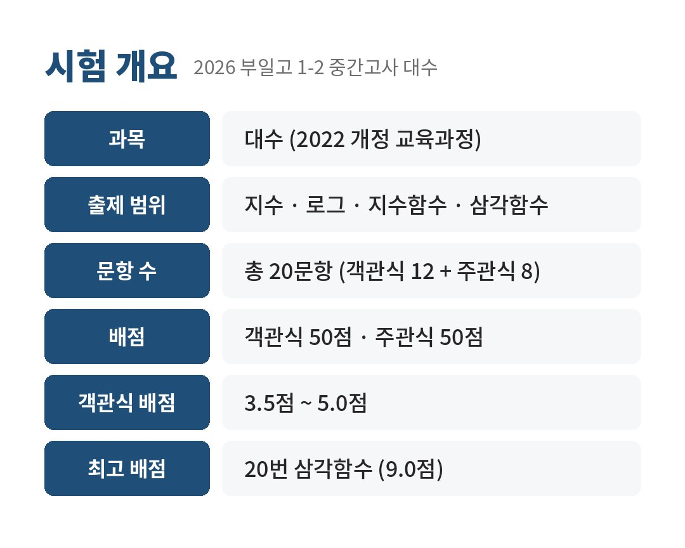
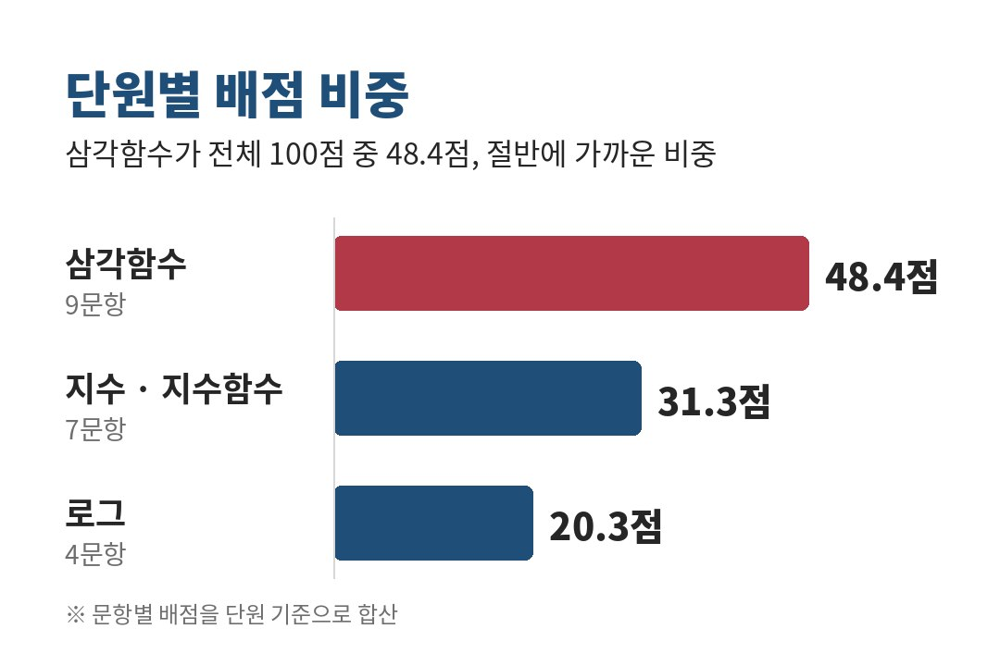
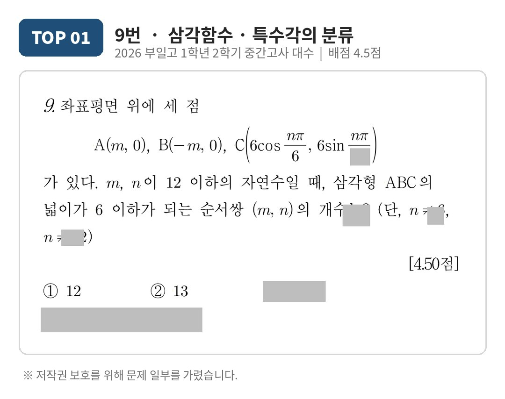
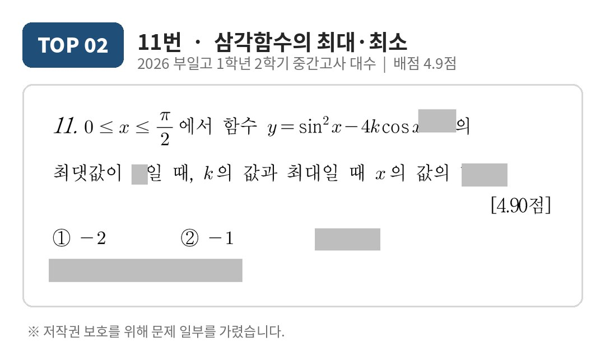
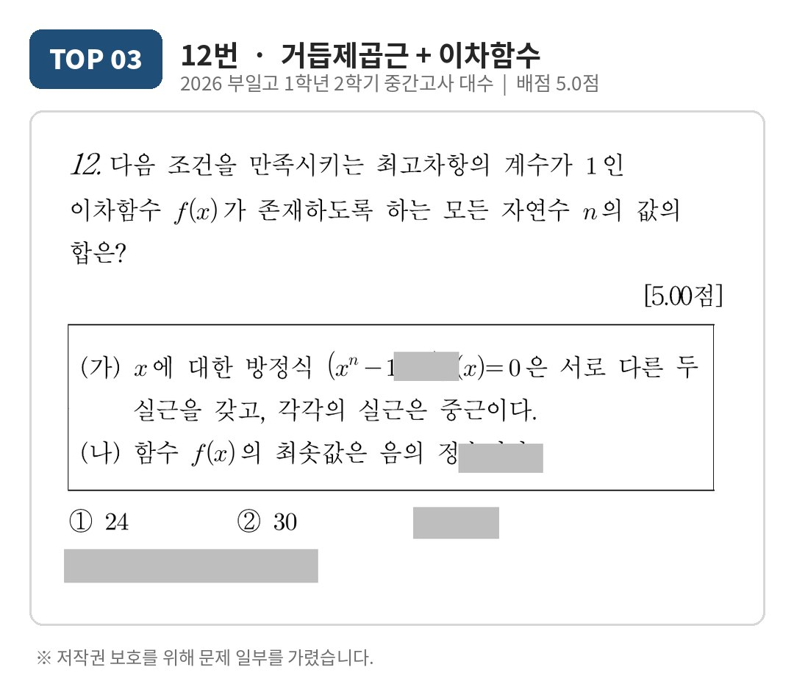
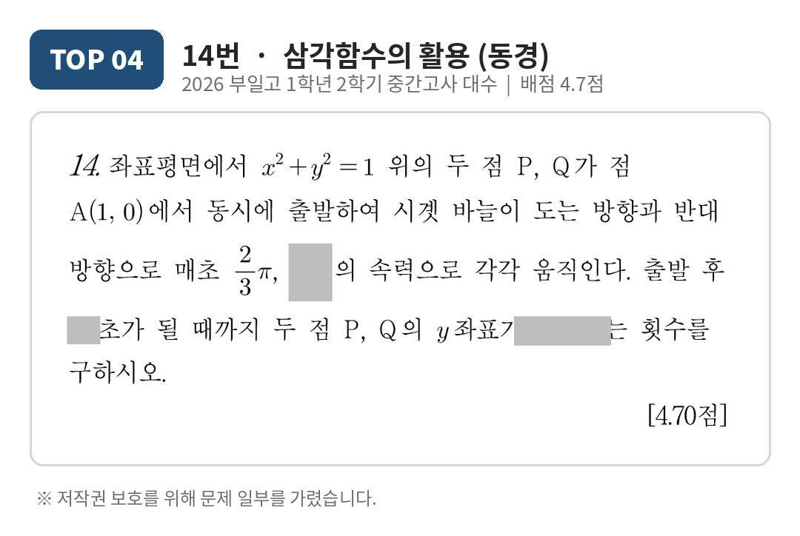
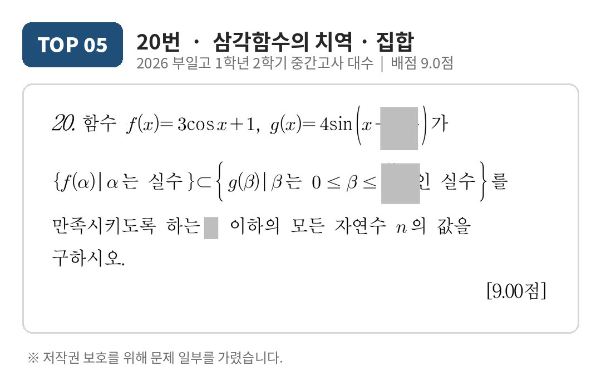
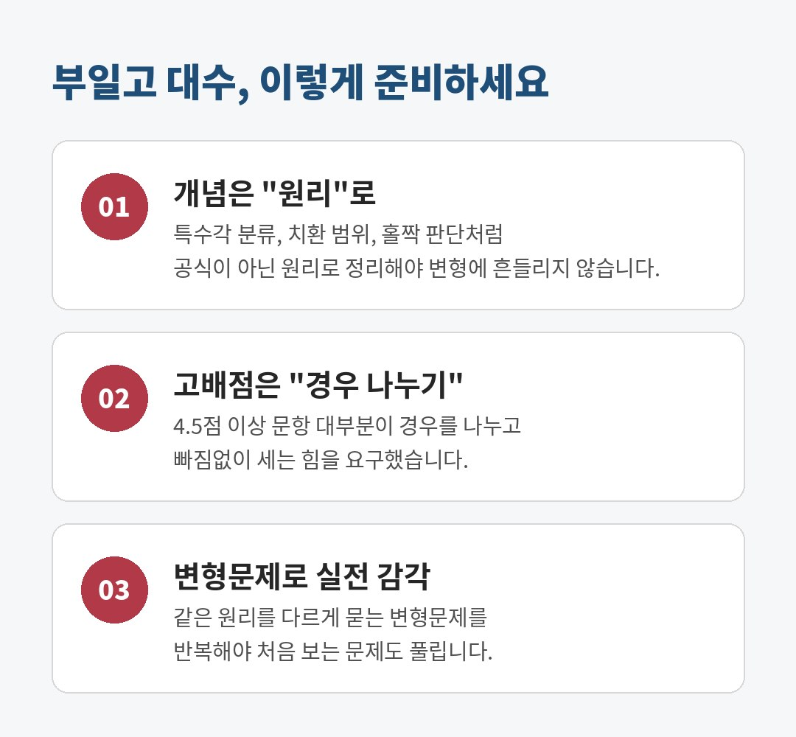

부일고 수학 시험분석｜2026 부일고 1학년 2학기 중간고사 대수 고배점 TOP 5

안녕하세요, 해운대 미래탐구 수학 안강엽T입니다.
이번 글에서는 2026 부일고 1학년 2학기 중간고사 수학(대수) 시험분석을 정리했습니다. 부일고 수학 시험의 전체 구성과 단원별 출제 비중을 살펴보고, 등급을 가른 고배점 문항 TOP 5의 출제 포인트와 풀이 방향, 수업에서 제공하는 변형 포인트까지 함께 소개합니다.
1. 부일고 대수 중간고사 시험 개요

이번 부일고 1학년 2학기 중간고사 대수는 총 20문항, 객관식 12문항과 주관식 8문항으로 출제되었습니다. 객관식과 주관식이 각각 50점씩으로, 주관식 비중이 절반입니다.
객관식은 3.5점부터 5.0점까지 번호가 올라갈수록 배점이 높아지는 구조였고, 마지막 20번 삼각함수 문항 하나가 9점으로 가장 큰 배점을 차지했습니다. 객관식에서 실수를 줄이는 것도 중요하지만, 결국 고배점 주관식에서 등급이 갈리는 시험이었습니다.
2. 단원별 배점 비중

문항별 배점을 단원별로 합산해 보면 삼각함수가 9문항 48.4점으로 전체의 절반에 가깝습니다. 지수·지수함수가 7문항 31.3점, 로그가 4문항 20.3점이었습니다.
특히 4.5점 이상 고배점 문항이 삼각함수에 몰려 있어서, 삼각함수를 "공식 암기" 수준으로만 준비한 학생은 점수를 지키기 어려웠을 시험입니다.
3. 고배점 문항 분석 TOP 5
지금부터는 이번 부일고 대수 시험에서 변별력이 컸던 5문항을 하나씩 살펴보겠습니다. (문제 이미지는 저작권 보호를 위해 일부를 가렸습니다.)
TOP 01. 9번 삼각함수: 특수각의 분류 (4.5점)

원 위의 점 C와 x축 위의 두 점 A, B로 만든 삼각형의 넓이 조건을 다루는 문제입니다. 넓이를 식으로 세우면 m × |sin(nπ/6)| ≤ 1 이라는 간단한 부등식이 됩니다.
문제는 그다음입니다. n의 값에 따라 sin값이 1/2, √3/2, 1로 나뉘기 때문에 이 세 그룹을 빠짐없이 분류하고 각각 가능한 m을 세는 힘이 필요합니다. 정답은 14개. 계산은 쉬운데 분류에서 하나만 빠뜨려도 틀리는 전형적인 "실수형 고배점" 문항입니다.
수업 변형 포인트 각을 nπ/4 꼴로 바꾸면 분류 기준 자체가 달라집니다. 특수각 분류를 외운 대로가 아니라 원리대로 하는지 확인하는 변형문제를 제공합니다.
TOP 02. 11번 삼각함수의 최대·최소 (4.9점)

sin²x를 1 − cos²x로 바꿔 cos x = t 로 치환하면 t에 대한 이차함수가 됩니다. 여기서 핵심은 치환한 t의 범위(0 ≤ t ≤ 1)와 이차함수의 축 위치를 비교해 경우를 나누는 것입니다.
축이 범위 안에 있을 때, 왼쪽에 있을 때, 오른쪽에 있을 때를 모두 따져야 k = −1, x = 0 이라는 결론에 도달할 수 있습니다. (정답 −1) "치환까지는 했는데 범위를 안 봤다"는 학생이 가장 많이 틀리는 유형입니다.
수업 변형 포인트 sin과 cos의 역할을 바꾸고, "합" 대신 "곱"을 묻도록 변형해 무엇을 치환할지, 범위는 어떻게 되는지를 학생이 스스로 결정하게 합니다.
TOP 03. 12번 거듭제곱근 + 이차함수 (5.0점, 객관식 최고 배점)

객관식 마지막 문항이자 5.0점짜리 문제입니다. "서로 다른 두 실근을 갖고 각각 중근"이라는 조건을 해석하면, f(x)의 두 근이 xⁿ = 1024의 실근과 정확히 일치해야 한다는 뜻이 됩니다.
여기서 n이 홀수면 실근이 1개, 짝수면 2개라는 거듭제곱근의 기본 성질이 결정적으로 쓰입니다. 최솟값이 음의 정수라는 조건까지 더하면 20/n이 자연수인 짝수 n만 남고, 정답은 36입니다. 기본 개념 두 개를 정확히 연결할 수 있는지를 묻는, 부일고다운 문항이었습니다.
수업 변형 포인트 1024 = 2¹⁰ 대신 729 = 3⁶ 으로 바꾸면 "지수가 정수가 되는 조건"을 약수 찾기로 연결해야 합니다.
TOP 04. 14번 삼각함수의 활용: 동경 (4.7점)

원 위를 서로 반대 방향으로 도는 두 점의 y좌표가 같아지는 횟수를 세는 주관식 문항입니다. y좌표가 같다는 것은 두 점이 "같은 위치"에 있거나 "y축에 대해 대칭인 위치"에 있다는 뜻입니다.
이 두 경우로 나눠 시각을 구하면 t가 정수인 경우 91번, t = 3/2, 9/2, … 인 경우 30번이 나오고 두 경우가 겹치지 않으므로 정답은 121입니다. 덧셈정리 없이도 동경의 위치 관계만으로 풀 수 있어서, 개념 이해도가 그대로 점수로 드러나는 문항입니다.
수업 변형 포인트 y좌표 → x좌표로 바꾸면 대칭축이 달라지고, 두 경우가 겹치는 시각까지 처리해야 하도록 구성했습니다.
TOP 05. 20번 삼각함수의 치역과 집합 (9.0점, 최고 배점)

이번 시험 최고 배점 9점 문항입니다. 집합의 포함 관계처럼 보이지만, 실제로는 "f(x)의 치역이 제한된 구간에서 g의 값의 범위 안에 들어가는가"를 묻습니다.
왼쪽 집합은 −2 이상 4 이하로 바로 나오고, 오른쪽은 θ = β + nπ/6 으로 놓아 구간의 위치를 n마다 확인해야 합니다. θ가 π/2를 지나면서 sin θ ≤ −1/2인 곳까지 닿는 경우만 조건을 만족하므로, 정답은 n = 2, 3입니다. 서답형이라 풀이 과정을 논리적으로 써 내려가는 연습이 되어 있지 않으면 부분 점수도 지키기 어렵습니다.
수업 변형 포인트 치역이 최댓값까지 꽉 차지 않는 경우로 바꿔 포함 조건을 최대·최소가 아닌 "범위 전체"로 판단하는지 확인합니다.
4. 부일고 대수 대비 전략

이번 부일고 대수 중간고사를 정리하면 세 가지입니다.
첫째, 개념은 원리로 정리해야 합니다. 특수각 분류, 치환 후 범위, 거듭제곱근의 홀짝 판단처럼 공식이 아닌 원리를 묻는 문항이 고배점이었습니다.
둘째, 고배점은 결국 경우 나누기입니다. 4.5점 이상 문항 대부분이 경우를 나누고 빠짐없이 세는 힘을 요구했습니다.
셋째, 변형문제로 실전 감각을 만들어야 합니다. 부교재(절대등급·자이스토리) 고난도 유형을 푸는 것에서 끝나지 않고, 같은 원리를 숫자와 조건을 바꿔 다르게 묻는 변형문제까지 반복해야 처음 보는 문제에서도 흔들리지 않습니다.
해운대 미래탐구 안강엽T 수업에서는 학교별 기출과 부교재를 분석해 위와 같은 변형문제를 직접 제작하여 매 수업 제공하고 있습니다.
부일고 수학 내신 대비, 시험 분석 자료나
수업 상담이 필요하시면 언제든 문의 주세요.